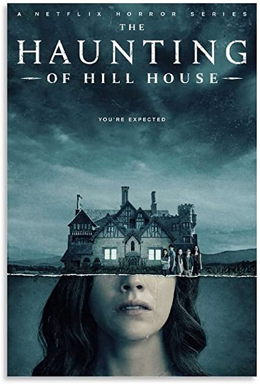

The Haunting of Hill House

Le docteur John Montague espère trouver des preuves scientifiques de l'existence du surnaturel. Il loue Hill House, un manoir réputé hanté, pour un été et invite plusieurs personnes qu'il a choisies en raison de leurs expériences avec les événements paranormaux. Seules deux acceptent : Eleanor Vance, une jeune femme timide qui vit en recluse pour s'occuper de sa mère handicapée ; et Theodora, une artiste au tempérament bohème et flamboyant. Eleanor et Theodora sont accueillies par Montague et Luke Sanderson, le jeune héritier de Hill House. Montague leur explique l'histoire de l'édifice, qui comprend plusieurs suicides ou autres morts violentes. Les quatre résidents commencent à vivre des événements étranges dans la maison, notamment des bruits nocturnes inexpliqués et des écrits apparaissant sur les murs.